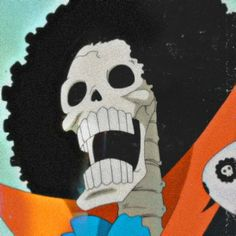

A série centra-se em Monkey D. Luffy, um jovem que, inspirado por seu ídolo de infância e poderoso pirata Shanks, "o Ruivo",
sai em uma jornada do mar East Blue para encontrar o famoso tesouro One Piece e proclamar-se o Rei dos Piratas. Em um esforço para organizar
sua própria tripulação, os Piratas do Chapéu de Palha, Luffy salva e faz amizade com um espadachim chamado Roronoa Zoro,
que se torna seu braço direito na busca pelo One Piece. Eles estão acompanhados em sua jornada por Nami, uma navegadora e ladra; Usopp, um atirador e um mentiroso; e
Vinsmoke Sanji, um chef de cozinha mulherengo. Eles adquirem um navio chamado Going Merry e se envolvem em confrontos com famosos
piratas do East Blue. Conforme Luffy e sua tripulação partem para novas aventuras, surgem novos membros na tripulação, como Tony Tony Chopper, um médico e uma rena
antropomórfica; Nico Robin, uma arqueóloga e ex-assassina; Franky, um carpinteiro ciborgue; Brook, um esqueleto músico e espadachim; e Jimbei,
um tritão homem-peixe e ex-membro dos Sete Corsários.
Tripulação dos Chapéu de palha
Luffy
Zoro
Sanji
Usopp
Nami
Robin
Chopper
Franky
Jimbe

Brook
Onde assistir?
Assista a todas as temporadas de One Piece e siga Monkey D. Luffy em sua missão para obter o One Piece, o maior tesouro do mundo, e tornar-se o Rei dos Piratas! na Crunchyroll.